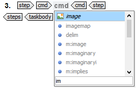

Using DITA elements
-
If you want the image to appear on a new line, insert a
<fig>element. -
Insert the
<image>element. - Click the folder icon to browse for an image and click Insert when you have located the correct one.